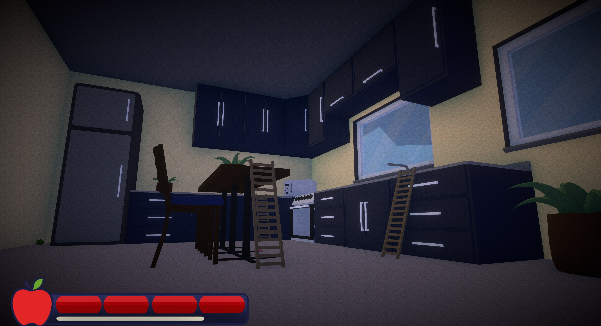

ReFruit: Camera Edition
A story of this game, a main character named Cameron Miles who loves capturing moments with a camera. However, each time he become obsessed with using the camera, he slowly loses his sense of time and awareness of his surroundings.
| Year | 2026 |
|---|---|
| Genre | Puzzle |
| Platform | WINDOWS |
| Engine | Unity |
| Dev Time | 3 Days |
Gameplay

First Level

Second Level